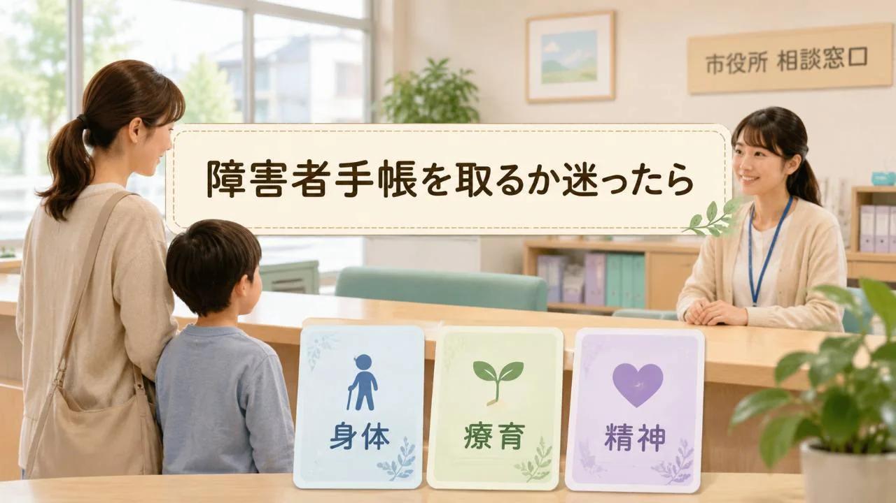

知っておくと読みやすくなる言葉
- 障害者手帳
- 身体障害者手帳、療育手帳、精神障害者保健福祉手帳をまとめて呼ぶときの言い方
- 療育手帳
- 知的な発達の遅れにより、日常生活に支援を必要とする方に交付される手帳
- 精神障害者保健福祉手帳
- 精神疾患や発達障害などにより、長期にわたり日常生活や社会生活に制約がある場合に申請できる手帳
- 申請窓口
- 千葉市では、手帳の種類によって区の保健福祉センター内の担当窓口が異なる
「障害者手帳を取った方がいいのだろうか」
保護者として、あるいは本人として、ここで立ち止まるのは自然なことです。
手帳は、本人を決めつける札ではありません。必要な支援や制度につながるための、公的な証明書です。一方で、申請には気持ちの整理も必要ですし、手帳の種類によって窓口や判定の流れも変わります。
この記事の前提：この記事は、千葉市の公式情報を確認しながら、障害者手帳を検討する方のために整理した一般的な情報です。実際の申請、必要書類、対象、交付の可否は、千葉市の窓口や医療機関、相談支援機関に確認してください。
まず、障害者手帳は3種類ある
障害者手帳と一口に言っても、1種類ではありません。千葉市で確認する場合も、まず次の3つを分けて考えると整理しやすくなります。
| 手帳の種類 | 主な対象 | 千葉市での主な窓口 |
|---|---|---|
| 身体障害者手帳 | 視覚、聴覚、肢体、内部障害など、身体機能に一定の障害があり日常生活に制限がある方 | お住まいの区の保健福祉センター高齢障害支援課 |
| 療育手帳 | 知的な発達の遅れにより、日常生活に支援を必要とする方 | お住まいの区の保健福祉センター高齢障害支援課障害支援班 |
| 精神障害者保健福祉手帳 | 精神疾患、発達障害、高次脳機能障害などにより、日常生活や社会生活に制約がある方 | お住まいの区の保健福祉センター健康課。来所または郵送で申請可能 |
ここが大事です。発達障害があるから必ず療育手帳、というわけではありません。千葉市の精神障害者保健福祉手帳の案内では、対象となる障害に「発達障害含む」と示されています。一方、知的障害は精神障害者保健福祉手帳の対象外とされています。迷う場合は、主治医や区の窓口に相談して整理するのが確実です。
療育手帳は、千葉市では5つの区分で見る
療育手帳は、全国的には「A・B」の大きな分け方で説明されることもあります。ただ、千葉市の案内に合わせるなら、もう少し細かい区分で見ておく必要があります。
千葉市では、療育手帳の障害程度は次のように案内されています。
| 千葉市の区分 | 程度の目安 |
|---|---|
| Ⓐ | 最重度 |
| Aの1、Aの2 | 重度 |
| Bの1 | 中度 |
| Bの2 | 軽度 |
申請に必要なものとして、千葉市の案内では、申請書と顔写真が示されています。申請後、千葉市西部児童相談所または千葉市障害者相談センターで判定を受ける流れです。
身体障害者手帳は、指定医の診断書が関係する
身体障害者手帳は、視覚・聴覚・肢体不自由・内部障害など、身体機能の障害により日常生活に著しい制限を受けている方が対象です。
千葉市の案内では、申請に必要なものとして、申請書、指定医の診断書、写真などが挙げられています。障害の部位や状態によって必要な診断書の様式も変わるため、最初に窓口へ確認してから進める方が安全です。
子どもの場合も、まずは「どの手帳に当たるか」を急いで決めすぎないことが大切です。身体の状態、発達の状態、医師の見立て、学校や家庭での困りごとを分けて整理してから、窓口に相談すると話が進めやすくなります。
精神障害者保健福祉手帳は、有効期間と更新も確認する
精神障害者保健福祉手帳は、精神疾患のある方の中で、長期にわたり日常生活または社会生活への制約があると認められた場合に交付されます。千葉市の案内では、等級は1級から3級までとされています。
対象となる障害には、統合失調症、うつ病などの気分障害、てんかん、高次脳機能障害を含む器質性精神障害、発達障害を含むその他の精神疾患などが挙げられています。ただし、対象となるかどうかは主治医に相談する必要があります。
| 確認したいこと | 千葉市の案内で押さえたい点 |
|---|---|
| 申請の時期 | 申請時に、初診年月日から6か月以上経過している必要がある |
| 申請方法 | 区の保健福祉センター健康課窓口への来所、または郵送で申請できる |
| 有効期間 | 手帳の有効期間は交付日から2年間 |
| 更新 | 有効期限日の3か月前から更新申請ができる |
| 決定までの期間 | 新規、更新、等級変更などは、申請受理から決定通知まで約2か月かかると案内されている |
「手帳があれば全部使える」わけではない
ここは誤解が起きやすいところです。
障害者手帳を持つことで、税の控除、交通機関や公共施設の割引、NHK受信料免除など、さまざまな制度につながる場合があります。ただし、すべてが自動で使えるわけではありません。
制度ごとに、手帳の種類、等級、所得、世帯状況、年齢、別の申請、事業者ごとの条件が関係します。障害福祉サービスや障害児通所支援を使う場合も、事前申請、聞き取り、支給決定などの手続きが必要です。
整理のしかた：「手帳そのものの申請」と「手帳を使って利用する制度・サービスの申請」は分けて考えます。手帳を取るかどうかを考えるときは、使いたい制度が何か、別申請が必要か、千葉市のどの窓口が担当かを一緒に確認しましょう。
学校での支援は、手帳の有無だけで決まらない
子どもの場合、保護者が気にしやすいのは「手帳を取ったら学校でどう扱われるのか」という点です。
学校での合理的配慮や支援は、障害者手帳の有無だけで決まるものではありません。本人の困り感、教育的ニーズ、学校での様子、保護者との共有、校内支援体制などを踏まえて相談していくものです。
手帳は、子どもを「問題」として扱うためのものではありません。見えにくかった支援ニーズを、関係者で共有しやすくする手がかりになることがあります。
迷ったときの確認リスト
まず確認したいこと
- 生活、学校、仕事のどこで困りごとが続いているか
- 身体、知的発達、精神・発達のどの領域に相談が必要そうか
- 主治医や学校、相談支援機関と話せているか
- 千葉市のどの窓口に相談する内容か
- 手帳を取った場合に使いたい制度や支援があるか
- 本人や家族が不安に感じていることは何か
最初から「取る」「取らない」を決めなくても大丈夫です。まずは、困りごとと相談先を分けて、必要な情報を集めるところからでよいと思います。
千葉市での相談先の見つけ方
| 相談したいこと | 最初に確認する窓口の例 |
|---|---|
| 身体障害者手帳、療育手帳、障害福祉サービスの申請 | お住まいの区の保健福祉センター高齢障害支援課 |
| 療育手帳の判定の流れ | 区の高齢障害支援課障害支援班。判定は千葉市西部児童相談所または千葉市障害者相談センター |
| 精神障害者保健福祉手帳 | お住まいの区の保健福祉センター健康課 |
| 学校生活での配慮 | 担任、特別支援教育コーディネーター、学校の教育相談窓口など |
まとめ
- 障害者手帳は、身体障害者手帳、療育手帳、精神障害者保健福祉手帳に分けて考える。
- 千葉市では、身体障害者手帳と療育手帳は区の高齢障害支援課、精神障害者保健福祉手帳は区の健康課が主な窓口になる。
- 療育手帳の区分は、千葉市ではⒶ、Aの1、Aの2、Bの1、Bの2として案内されている。
- 精神障害者保健福祉手帳は、初診年月日から6か月以上経過していること、有効期間2年、更新時期などを確認する。
- 手帳を持てばすべての制度が自動で使えるわけではない。別申請や条件がある。
- 子どもの学校での支援は、手帳の有無だけでなく、本人の困り感や教育的ニーズをもとに相談していく。
手帳は、本人を決めつけるものではなく、支援につながるための道具です。迷ったときは、急いで結論を出すより、まず「何に困っているのか」「どの窓口に相談するのか」を一緒に整理していきましょう。
ご注意ください：この記事は一般的な情報提供を目的としており、診断、医療判断、法的判断、個別ケースの結論に代わるものではありません。手帳の対象、申請方法、必要書類、使える制度は、障害の状態、年齢、所得、自治体、年度などによって変わることがあります。実際に申請や制度利用を考える場合は、千葉市の担当窓口、医療機関、相談支援機関、学校などにご確認ください。
この記事を使うヒント
家庭内で「手帳を取るかどうか」を話す前に、この記事で手帳の種類、千葉市の窓口、別申請が必要な制度を分けて確認できます。本人や家族の気持ちを置き去りにせず、相談前のメモとして使ってください。